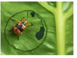

2020年北京市中考生物试题 · 科普阅读 第20题
20．（5分）阅读科普短文，回答问题。
西双版纳位于云南省最南端，拥有中国唯一的热带雨林自然保护区。这里分布有约六分之一的中国植物物种，为野生动物的生存繁衍提供了良好的栖息环境和丰富的食源。
海芋，雨林中常见的一种巨叶植物，对于很多昆虫来说，是获得能量的重要食源之一。其叶片一旦被咬，储存在茎中的毒素就会沿着叶脉输送到创口处，毒杀昆虫，避免叶片被过量取食。
有一种聪明的小叶甲﹣﹣锚阿波萤叶甲，很清楚海芋的秘密，它们会采取“画圆充饥”的策略来获取美食。小叶甲爬到海芋叶背面，以自己的身体做圆规画出一个个直径约3cm的标准圆圈。每个圆圈要精心地画三次。第一次仅仅在叶片表面上划出一条很浅的印痕，这不会引起海芋叶片的“警觉”；第二次画圆，将叶表皮外的角质层割裂；最后一次画圆，把圆圈上的叶脉切断。此时，海芋的毒素很难再通过断开的叶脉传输。这么多形状，为何要选择画圆？因为在周长相等的情况下，圆是面积最大的几何图形。还有一个可能的原因是，这么做能360°全面阻隔从叶脉传来的毒素。
在漫长的时间长河中，小叶甲与海芋并不仅仅只是敌对的双方，也是“朋友”。两者在长久的斗争中彼此影响，相互制约。更为精明的小叶甲能够躲避海芋毒素生存下来，防御能力更强的海芋被选择出来，从而实现了共同进化。
这就是热带雨林，物种之间的竞赛驱动了各自的演化，呈现出变化无常又异彩纷呈的世界。
（1）西双版纳热带雨林生态系统是由生物和 组成的。雨林中物种丰富，食物链和食物网复杂，使这一生态系统具有较强的 能力。
（2）小叶甲与海芋间的关系属于 。根据文中信息判断，对小叶甲“画圆充饥”的过程及结果的理解，合理的是 （多选）。
a．第一次画圆可使海芋的毒素汇聚于圆圈处
b．第二次画圆未破坏叶肉细胞
c．第三次画圆切断了输导组织
d．可获得更多的食物
（3）小叶甲与海芋在长期生存斗争中共同进化，是 的结果。
